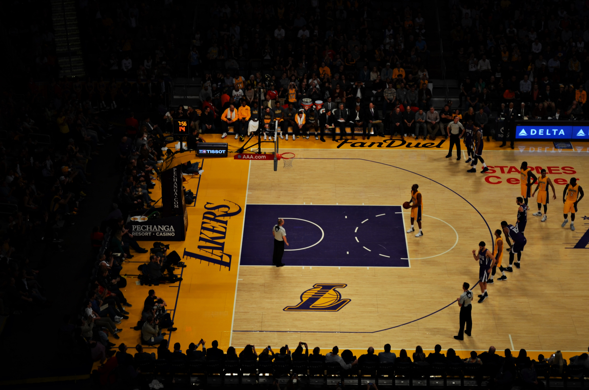
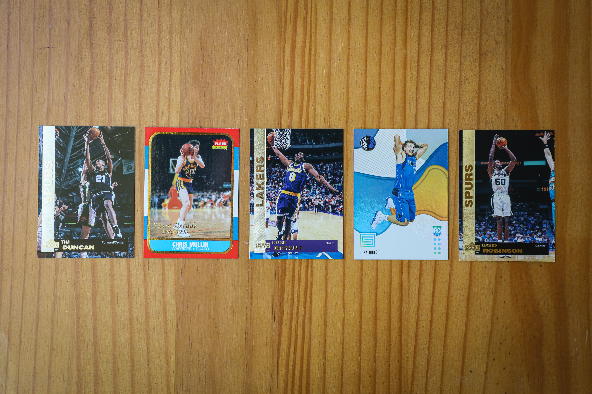

Kobe Bryant
"One of the greatest players in the history of our game"- NBA commissioner Adam Silver
Kobe's career was nothing short of a miracle.
Player-profile
From his positions to playstyles over the years, Kobe's player-profile is iconic.
From an alienated superstar to a teammate and a leader.

"Kobe" was a brand
Kobe was a basketball icon and became an entrepreneur using his name.
Kobe had endorsements, business ventures, and even television appearances.
